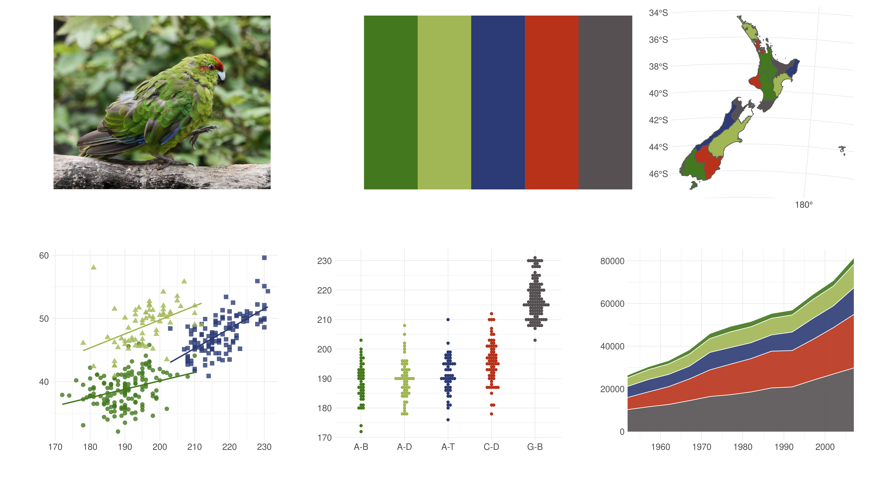
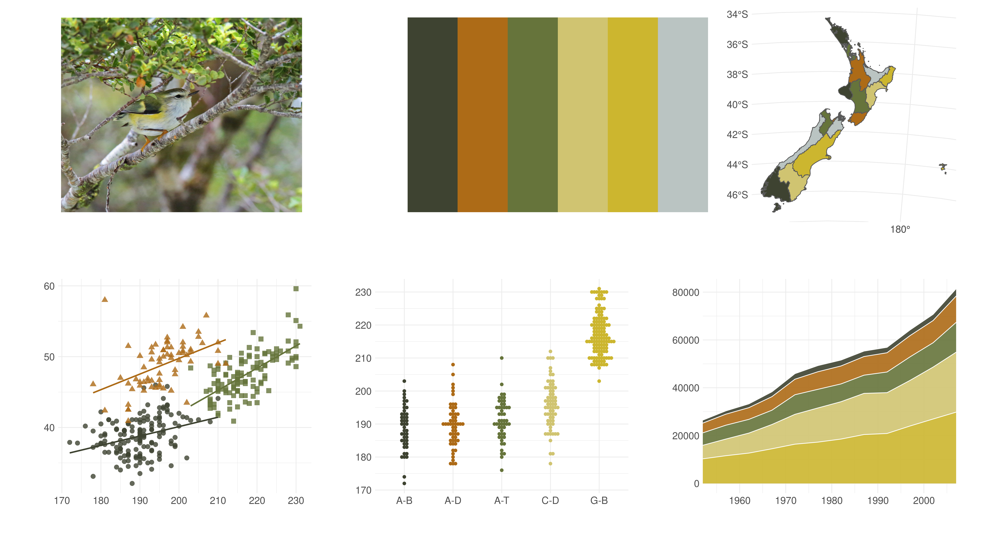

This is a collection of colour palettes for data visualisation using R. They are derived from photos of birds native to New Zealand.
Installation
You can install it using the devtools package:
# install.packages("devtools") devtools::install_github("G-Thomson/Manu")
Colour palettes
Hihi - Notiomystis cincta - Stichbird
c("#070604", "#F9E211", "#797A87", "#A8ACAD", "#D6CBB5")
Photo:“Stitchbird (Notiomystis cincta)” by David Cook Wildlife Photography is licensed under CC BY-NC 2.0
Hoiho - Megadyptes antipodes - Yellow-eyed penguin

Photo:“Yellow-eyed penguin (Megadyptes antipodes)” by Bernard Spragg is licensed under CC0 1.0

Kākāriki - Cyanoramphus Spp.
Photo:“Kākāriki” by SidPix is licensed under CC BY 2.0
Kea - Nestor notabilis

Photo:“Kea. New Zealand Alpine Parrot. (Nestor notabilis)” by Bernard Spragg is licensed under CC0 1.0

Kororā - Eudyptula minor - Little blue penguin

Photo:“Blue Penguin” by Syd3r is licensed under CC BY-NC-SA 2.0
Kōtare - Todiramphus sanctus - Kingfisher

Photo:“Sacred Kingfisher (Todiramphus sanctus)” by Wade Tregaskis is licensed under CC BY-NC 2.0
Pūtangitangi - Tadorna variegata -paradise shelduck

Photo:“File:Paradise-Shelduck-pair.jpg” by Michael Hamilton is licensed under CC BY-SA 2.0
Takahē - Porphyrio hochstetteri

Photo:“Takahē” by Kathrin & Stefan is licensed under CC BY-NC-ND 2.0</a
Takapu - Morus serrator - Australasian gannet

Photo:“New Zealand 2006/2007” by Travelling Pooh is licensed under CC BY-NC-ND 2.0
Titipounamu - Acanthisitta chloris - Rifleman
Photo:“Rifleman (Titipounamu)” by vil.sandi is licensed under CC BY-ND 2.0
Tūī - Prosthemadera novaeseelandiae

Photo (left):“Tūī” contributed by Te Mihinga<; Photo (right):“Tūī feeding on Harakeke nectar” by SidPix is licensed under CC BY 2.0
Non-avian additions
Pepetuna - Aenetus virescens - Puriri moth

Photo:“Puriri Moth - closeup” by Stefan Marks is licensed under CC BY-NC-ND 2.0

{kind=link}